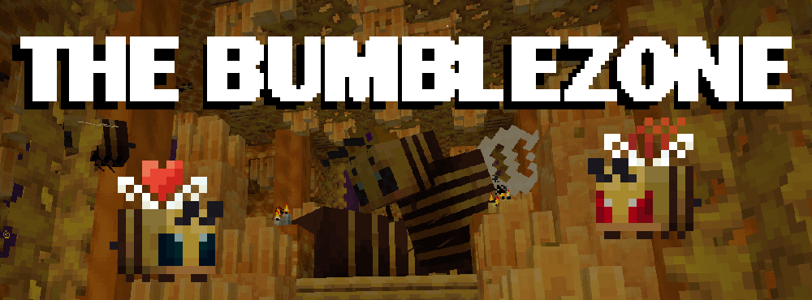

The Bumblezone
DimensionsA wonderful bee dimension mod with lots of new exploration and adventuring to do! Check out the advancements for how to play the mod!
Requires: Resourceful Lib
Incompatible with:

A wonderful bee dimension mod with lots of new exploration and adventuring to do! Check out the advancements for how to play the mod!